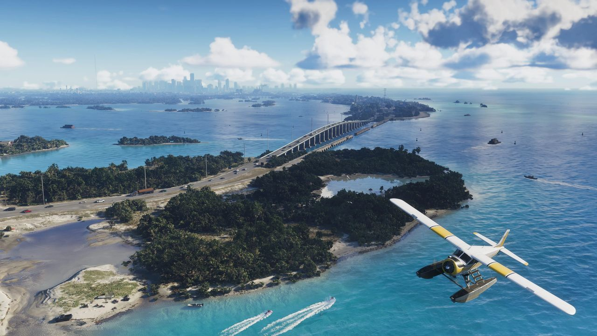
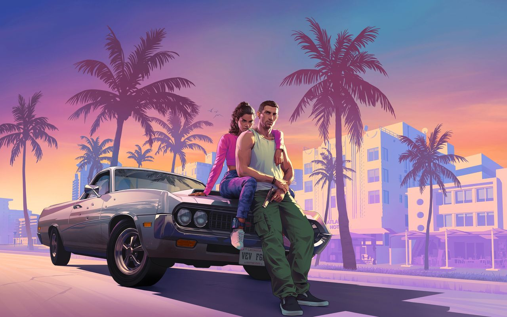

© Rockstar Games / Take-Two Interactive — image officielle de GTA VI (capture officielle), via GTA Wiki.
État de Leonida
Fiabilité Plusieurs lieux listés en bas de page n'ont été vus que dans les fuites de septembre 2022 (non officielles) : ils peuvent changer ou disparaître avant la sortie.
L'État de Leonida est l'État fictif américain dans lequel se déroule GTA 6. Il est célèbre dans l'univers de la série pour ses stations balnéaires, ses parcs d'attractions, son climat chaud et ensoleillé, ses loisirs nautiques et le port le plus fréquenté du monde. Des villes comme Vice City et Vice Beach sont citées dans toute la série.
L'État est aussi, indirectement, à l'origine des théoriciens du complot sur l'alunissage et du phénomène « Leonida Man » sur les réseaux sociaux.
Galerie

© Rockstar Games / Take-Two Interactive — images officielles de GTA VI (bandes-annonces, captures, site officiel), via GTA Wiki.
Une carte deux fois plus grande que San Andreas
Selon Rockstar, Leonida est la plus grande carte créée par le studio à ce jour : environ deux fois la taille de San Andreas dans GTA V. L'État est conçu pour être plus dense, plus détaillé et plus interactif, avec davantage d'intérieurs explorables et une grande variété d'environnements, de villes et de zones rurales.
L'équipe de développement a mené de longues recherches dans le sud de la Floride et ailleurs : voyages à Miami, dans les Everglades et dans les Keys, étude de villes et de zones rurales du nord de l'État, discussions avec les habitants sur la culture locale, la criminalité et les forces de l'ordre. Les scénaristes ont étudié les dialectes locaux et les artistes ont visité des lieux et des intérieurs pour s'en inspirer.
Les six régions
- Vice City — la métropole néon, d'inspiration Miami
- Les Leonida Keys — l'archipel tropical
- Grassrivers — les marais, inspirés des Everglades
- Port Gellhorn — la Floride touristique en difficulté
- Ambrosia — la région industrielle et sucrière
- Parc national de Mount Kalaga — forêts, canyons et collines du nord
Comtés connus
- Vice-Dale : Vice City, Vice Beach, Hamlet
- Mariana : Key Lento, Watson Bay
- Kelly : Port Gellhorn
- Ambrosia : Ambrosia
- Leonard : Waning Sands
Inspiration réelle
L'État est clairement basé sur la Floride, avec des influences de la Géorgie pour la topographie et le parc national de Mount Kalaga. Un complexe pénitentiaire du comté de Kelly, vu dans les fuites de 2022, semble modelé sur l'Augusta State Medical Prison, près d'Augusta (Géorgie). Rockstar décrit la Floride comme un « lieu de beauté et de contraste », où se mêlent richesse, glamour, difficultés et criminalité.
Le nom de Leonida semble rendre hommage au conquistador espagnol Juan Ponce de León, qui mena la première expédition européenne vers la péninsule de Floride.
Frontière nord
La frontière nord de l'État longe le parc national de Mount Kalaga, probablement contre l'État voisin de Gloriana.
Lieux cités uniquement dans les fuites (non officiel)
Plusieurs noms n'ont été repérés que dans les fuites de septembre 2022, sur un panneau routier ou dans un menu de débogage listant des événements du monde. Leur existence et leur forme finale sont donc non confirmées :
- Bohemia — un lieu dont on ne sait presque rien ; le nom évoque la région tchèque, le mouvement bohème ou la mode bohème.
- Redhill — apparemment une forêt avec un chantier ; le nom pourrait venir de la région des « Red Hills » du nord de la Floride.
- Sundown — apparemment une plage et une piste d'aéroport.
- East Key — probablement dans les Leonida Keys, comté de Mariana.
- North Beaches — probablement un groupe de plages au nord de Vice Beach, vu sur un panneau de l'Interstate 97.
- Domed Hills — une chaîne de collines dans le parc de Mount Kalaga, près de Port Gellhorn.
- Yorktown — une ville de l'ouest de Leonida, signalée sur une route 2 au nord du Bocamar Bridge, au nord de Port Gellhorn.